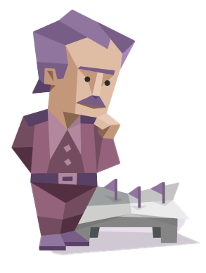

상대는 어떤 사람이지?
INTJ 전체적인 부분을 조합하여 비전을 제시하는 사람들

❤️연애스타일❤️
논리적이고 합리적인 INTJ 유형의 사람들은 사람을 보는 기준이 높은 편입니다.이 때문에 INTJ는 타인과 관계를 시작하거나 정을 붙이는데 시간이 오래 걸리는 편입니다.
이들은 로맨틱한 감정에 휘둘리기보다는 삶의 방향성이 같은 사람에게 더 끌리는 경향이 있습니다.
따라서 연애를 하면서도 결혼이나 육아 등 미래에 대한 계획을 그려보는 타입입니다.
때로는 지나치게 현실적인 면도 있지만, 사랑하는 사람에게는 순애보적인 모습도 보여줍니다.
또한 이들은 솔직함을 중시하며 상당히 단호한 면모도 지니고 있어서
연인 관계라면 이러한 점을 참고할 필요가 있습니다.
💔이별스타일💔
INTJ 정확히 뭐가 잘못되었는지 파악할 때까지 고민을 계속하는 타입입니다.생각이 많은 데다 확실한 결론을 원하는 타입이기 때문입니다.
기본적으로 INTJ는 항상 미래를 염두하고 관계를 맺기 때문에 쉽게 관계를 저버리지 못합니다.
그러나 관계에 정성을 쏟았다는 이유로 연인을 이상화하는 일은 피해야 할 것입니다.
스스로를 너무 자책하거나 이미 지나간 과거에 대해 지나치게 고민할 필요는 없습니다.
고민을 줄이고, 새로운 관계를 지향해도 괜찮습니다.